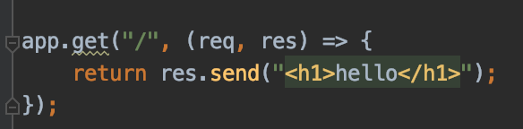

HTML
Use HTML to structure your web page. Elements will tell the browser how to display your content.
Add attributes to your elements to provide additional information.
This is how and HTML page is structured, add your desired elements within the body tag.
CSS
Use CSS to style your web page.
You can style with css in-line, internally or externally.
CSS can be used to choose colors, font styles, sizes and much more.
Select which element to style via the element name, class or id.
jQuery
JavaScript gives your page functionality. jQuery is a JavaScript library, imported in your HTML file within a script tag.
Use jQuery to simplify your JavaScript usage. With jQuery you can use one line methods that otherwise would require multiple lines of code.
Use AJAX to update a page without reloading, request and receive data from a server.
Use jQuery and AJAX get and post methods to send and receive data from the server.
The get method request data from a specific resource: $.get(URL,callback);
The post method sends data to be processed to a specified resource: $.post(URL,data,callback);
jQuery also simplifies DOM manipulation.
Here are some examples of what you can use jquery for:
Example 1: Swap values
Example 2: Change styling with jQuery.
- Point 1
- Point 2
- Point 3
- Point 1
- Point 2
- Point 3
Express API
Node.js is server side JavaScript. Express is a node.js framework. Express is used when creating http requests.
Express can be used to return HTML, files, and JSON

Use Express to start your server and receive and send your data.

Import express with require(), and create a const app to access the methods for routing HTTP requests.
To serve static files such as images use express.static(). express.json and express.urlencoded are part of bodyParser;
express.json recognize the incoming Request Object as a JSON Object.
The get and post methods have two parameters, a path for the request and a request and response.
In the example above the get request return the wanted HTML files. The post takes data from a form and send this data.
The listen method takes a the specified port and starts the server on that port.
One can use a get request to send data with query string data: You can convert your data to query string parameters and pass them along to the server.
However typically ones uses post methods for this, especially when creating a RESTful API.
RESTful API
Representational State Transfer is an architectural standard for APIs with a set of rules to ensure a uniform representation.
When creating a RESTful API make sure to be consistent in using GET, POST, PUT and DELETE for CRUD operations.
Terminal
Use the terminal on your computer to execute commands.
The following have been used in this course: cd, ls, sudo, npm, node, nodemon, budo.
- cd: used for navigating through out your computers folders and files.
- ls: used to return every item within a folder.
- sudo: stands for superuser do, used when a higher level of security privileges is need for example installing a package globally.
- npm: node package manager, used to download packages such as nodemon.
- node: runs your node.js application.
- nodemon: runs node.js based applications and restarts application when changes are made.
- budo: starts a server. Use --live to refresh your browser when changes are made.